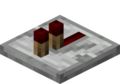
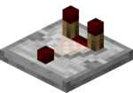

Redstone Dust
Redstone dust acts as a wire, transmitting redstone power through it. Unlike the real world, there is infinite power that lasts forever once a power source is placed, although as it travels through the wire it gets duller and duller until 15 blocks later the signal disappears.

Redstone Repeater
Redstone repeaters are used to transmit power. They strengthen redstone dust signals that have been weakened by distance. They are also used to delay a signal and/or redirect a signal.

Redstone Comparator
Redstone comparators are used to compare or subtract two signals. They can also be used to measure how full a container (for example a chest or hopper) is.